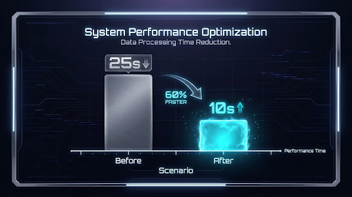

Cache y Optimizacion de Latencia
El proceso de medicion como disciplina: de ~20s a ~5s promedio. Cache FAQ, embeddings en disco, Whisper medium, y SSE.
El Patron: Medir, Optimizar, Verificar
Cada optimizacion que hicimos siguió el mismo patron:
- Medir: Instrumentar el pipeline para saber exactamente donde se va el tiempo
- Identificar cuello de botella: Que componente consume mas tiempo?
- Optimizar: Atacar el cuello de botella con la tecnica adecuada
- Verificar: Confirmar que la optimizacion realmente mejoro los tiempos
- Documentar: Registrar el tradeoff para que futuros desarrolladores entiendan la decision
Tabla Completa de Optimizaciones
| Optimizacion | Mejora | Detalle |
|---|---|---|
| Recorte del system prompt | -0.5 a -1.5s | De ~1200 a ~600 caracteres reduce tiempo de processamiento del LLM |
| Cache FAQ (20 preguntas) | -4 a -8s | Preguntas frecuentes cacheadas saltan todo el pipeline STT+RAG+LLM |
| Cache + RAG enrichment | Instantanea + contexto wiki | Las respuestas cacheadas se enriquecen con contexto actualizado |
| Wiki metadata para RAG | Mejor precision | Filtrado por tipo y entity boost mejoran la relevancia |
| Persistencia de embeddings | -2 a -3s en arranque | Embeddings en disco .npz evitan recalcular al iniciar |
| Whisper medium float16 | +20-30% precision | Precision vs small es critica para contexto tecnico |
| SSE streaming | Latencia percibida ~0s | El usuario escucha antes de que termine la generacion |
Antes vs Despues

Comparativa de latencia: antes ~15-25s por turno | despues ~8-12s (cache hits: 4-6s)
Promedio por turno sin optimizar
Con cache hits: 4-6s. Sin cache: 8-12s
Cache FAQ: La Mayor Ganancia
La optimizacion con mayor impacto fue el cache de preguntas frecuentes. Identificamos las 20 preguntas mas comunes en una entrevista tecnica y pre-generamos sus respuestas.
Cuando el reclutador pregunta algo cacheado, el sistema:
- Compara la pregunta contra el cache con similitud semantica (no matching exacto)
- Si supera el umbral, retorna la respuesta cacheada instantaneamente
- El audio se genera en ~200ms en lugar de ~5-8 segundos
Un cache por texto exacto solo funcionaria si el reclutador escribiera la pregunta identica. Usamos embeddings para comparar el significado de la pregunta, no las palabras exactas. "Cual es tu experiencia con Python?" y "Hablame de Python" matchearian el mismo cache.
El Tradeoff Fundamental
Optimizar latencia siempre implica tradeoffs:
- Cache vs Frescura: Las respuestas cacheadas pueden estar desactualizadas si la wiki cambia. Mitigamos invalidando el cache cuando cambian los documentos.
- Modelo pequeno vs Precision: small es mas rapido que medium, pero pierde precision en contexto tecnico. Preferimos la precision.
- beam_size=1 vs Calidad: beam_size=1 es mas rapido pero explora menos. Para conversacion, es aceptable.
- SSE vs WebSockets: SSE es mas simple pero unidireccional. Para nuestro caso, es suficiente.